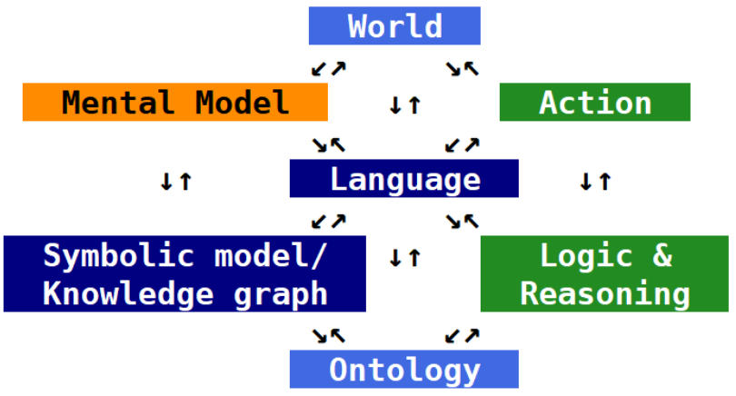
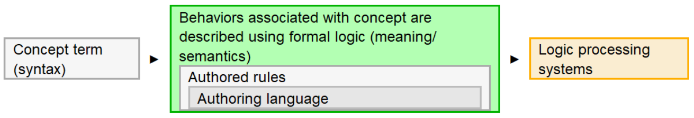
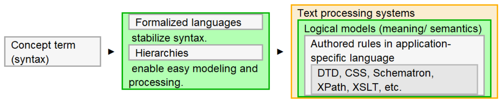

What does it take to explain everything to a computer? This is where the ways that we perceive existence (natural-system ontologies) and formalized computing ontologies come into play. What's an ontology? Here are a couple of descriptions:
Ontology is the subject that asks the question “What is there?” The answer can be stated in one word: “Everything.” | ||
| --W. V. O. Quine | ||
Figure 1. Sowa Hexagon
|  |
John F. Sowa's Hexagon puts language at the center and emphasizes the importance of mental models and logic in the formalization of an ontology. Formalizing real-world and abstract concepts for our buddies the bots effectively involves not only dealing with “what exists?” as a list of terms, but also by dealing with all of the models and behaviors that Sowa identifies.
Fully-formalized computing ontologies associate terms with formal logic. That's really expensive. Markup, from this perspective, could be considered a semi-formalized ontology.
Figure 2. Formalized ontologies
|  |
Figure 3. Semi-formalized, markup-based ontologies
|  |